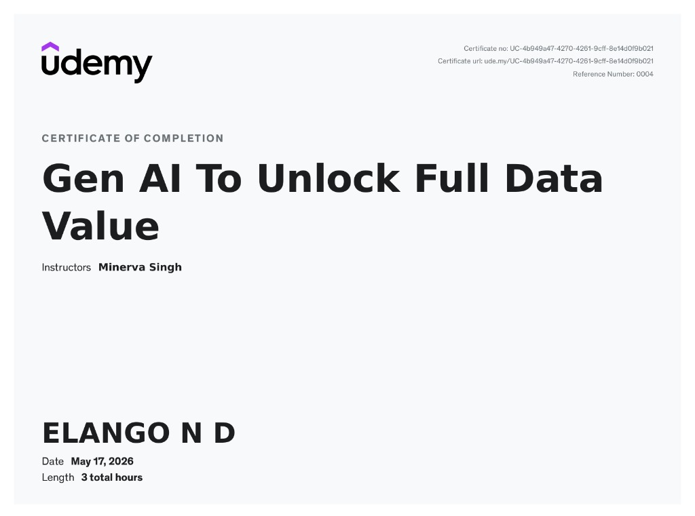
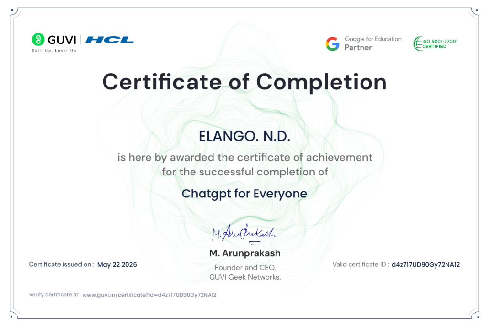
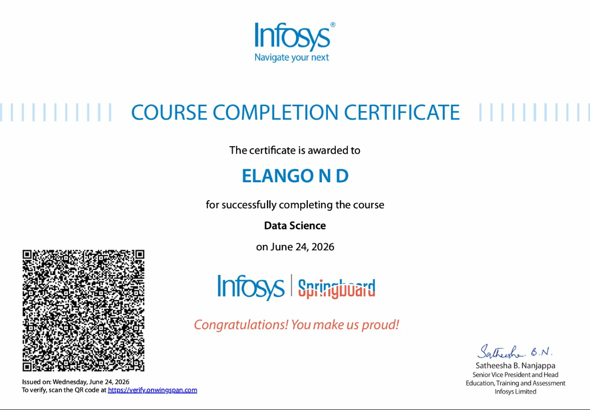
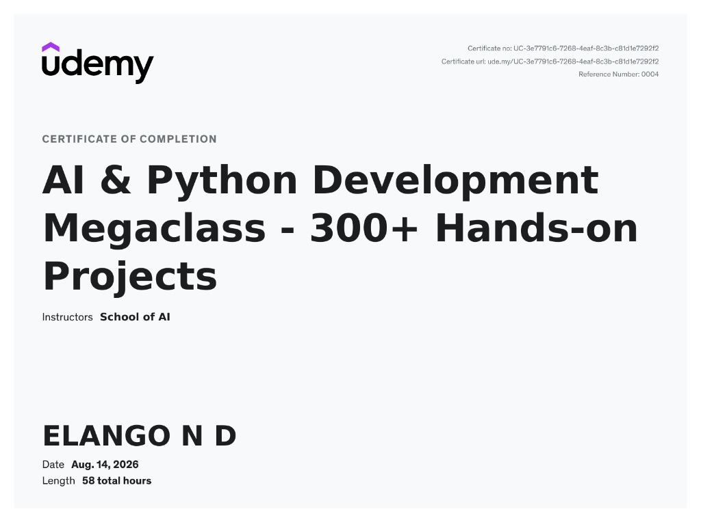
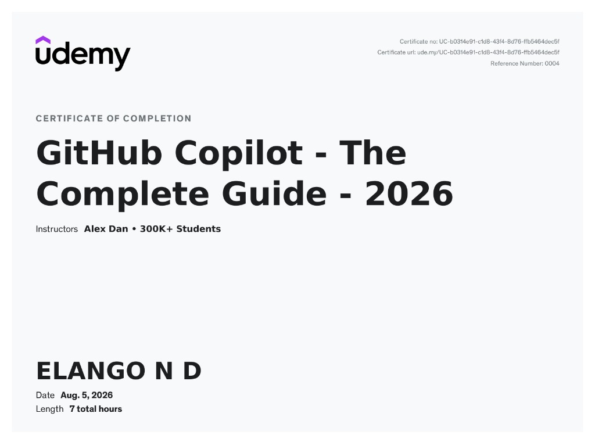
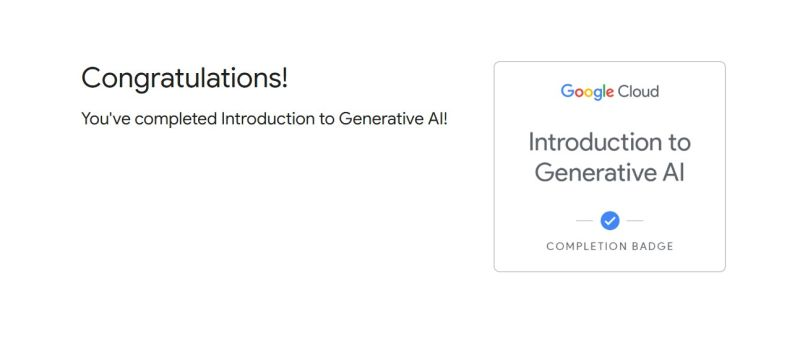
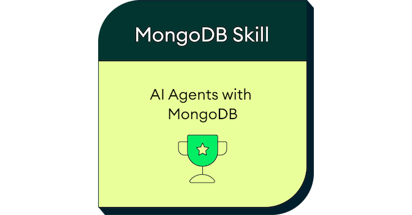
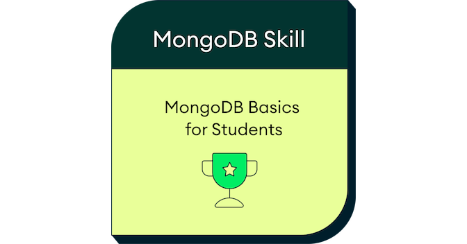

Portfolio
Projects
Hands-on work exploring AI capabilities and building real-world tools.
The Wonderment Tour
A minimalist, immersive web experience designed for a fictional event tour, leveraging advanced HTML5 and CSS3 to deliver a premium user experience with deep blue dark themes, smooth transitions, and background videos. Developed using the Antigravity IDE and an AI-assisted workflow to handle planning, implementation, and coding.
Features
- Dark Theme & Neon Lights
- CSS Animations & Hover Effects
- Real Images & Background Videos
- Real Places and Location for exposure
User Experience
- Multi-page setup (Home, Venues, Criteria, Tickets, Contact)
- Redirects to Booking page and tickets
- Eligibility & Regulations sections for realism
- Maps, Real Locations, and Pricing Details
AI Models Used
- Gemini 3.1 Pro: Building Plan & Prompts
- Gemini 3.5 Flash: Implementation Plan
- Claude Opus 4.6: Coding
Key Takeaways: Learned the real world need of the webpages and User needs. Potentially done the R&D works to fulfill the users experience for this particular event. Used the maximum potential of HTML and CSS. Gained a much amount of knowledge and experience in prompting, using AI tools (Antigravity IDE), GitHub, real working scenario and project deployment in Vercel.
RKFI - Student Registration Form
A robust full-stack film registration portal designed for student registrations, featuring secure authentication, automated email submission alerts, and production cloud deployment. Built with a modern responsive frontend hosted on Netlify and a Node.js/Express backend hosted on Render.
Tech Stack & Architecture
- Frontend: HTML5, Modern CSS3, Vanilla JS (ES6+ Fetch API) — Hosted on Netlify
- Backend: Node.js, Express.js, express-session, bcryptjs — Hosted on Render
- Auth & Messaging: Google OAuth 2.0 & Nodemailer (SMTP)
- AI Collaborator: Antigravity IDE & Gemini for backend refactoring & preflight CORS optimization
Engineering Challenges Overcome
- Google OAuth Origin Mismatch: Resolved Error 400 origin mismatch transitioning to production by configuring authorized JS origins in Google Cloud Console for Netlify.
- CORS Preflight & Cross-Domain Cookies: Fixed cross-origin restrictions between Netlify & Render via custom preflight headers, proxy trust, and sameSite: 'none' secure cookies.
- Automated Email Alerts: Integrated Nodemailer with Google App Passwords to trigger real-time HTML email notifications upon every application submission.
Key Features
- Google OAuth 2.0: One-tap secure social login and user hydration
- Automated Email Workflows: Instant administrative submission notifications
- Cross-Origin Session Management: Secure session cookie handling across Netlify & Render
Key Takeaways: Gained deep hands-on experience in full-stack architecture, cross-domain CORS troubleshooting, production OAuth 2.0 configurations, and cloud deployment pipelines across Netlify and Render. Utilized AI pair programming (Antigravity IDE & Gemini) to rapidly debug production CORS and session cookie issues.
Student Attendance & Class Hour Monitoring
A high-performance, privacy-centric, and completely offline attendance and class hour logger designed for educational environments such as university computer labs or remote classrooms where internet connectivity is spotty. Runs locally with zero external cloud dependencies, zero-config database setups, and instant offline boot speeds.
Tech Stack & Architecture
- FastAPI (Python): Async REST API backend
- SQLite3: Embedded DB with relational foreign key PRAGMAs
- Frontend: HTML5, CSS3, Tailwind CSS (Glassmorphism UI)
- Chart.js: Localized data visualization
- Automation: PowerShell & Batch launch scripts
Engineering Highlights
- 100% Offline Asset Boot: Auto-downloads & serves Tailwind & Chart.js locally
- Lightweight State Engine: Sub-millisecond UI updates for 60+ students
- Extensible SQL Schema: Join tables mapping class logs to student rosters
- Data Portability: Instantly stream CSV, JSON archives, or raw SQLite backups
Key Features
- Rapid Log Entry: One-click Present/Absent toggle grid
- History Explorer: Retroactive log inspection & absentee registers
- Data Insights: Weekly attendance trends & faculty workload graphs
Key Takeaways: Designed developer-friendly, zero-ops, local-first applications. Proved that rich, visual, and highly functional tools can be built privacy-first without relying on complex cloud infrastructure, mastering local asset bootstrapping, database constraint modeling, and desktop automation.
College Availability Finder
A web application where users can input their cutoff marks or exam scores to discover available colleges that match their profile. Powered by public APIs and an AI-driven frontend for intelligent search, filtering, and recommendations.
Learning Path
Certification Takeaways
Click any certificate card to open its floating window for full details, insights, and verification links.

Gen AI To Unlock Full Data Value
Prompt Engineering with GitHub Copilot

ChatGPT for Everyone
Introduction to Advanced Gen AI Tools

Data Science

AI & Python Development Megaclass (300+ Projects)

GitHub Copilot - The Complete Guide - 2026
Excel
Skill Verification
Professional Badges
Official digital badges awarded by cloud providers and technology platforms.

Introduction to Generative AI

AI Agents with MongoDB
AI Data Strategy with MongoDB
